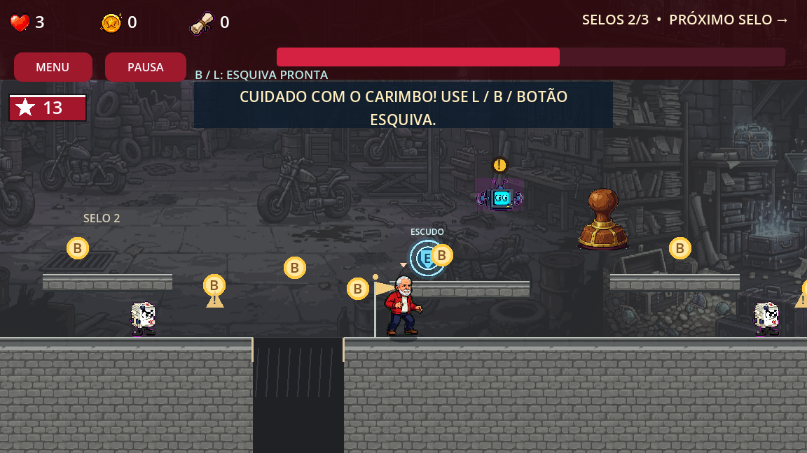
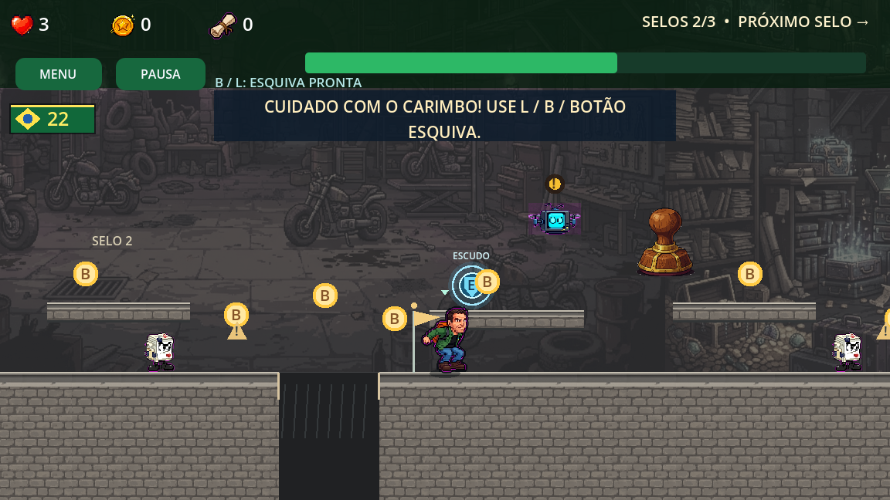

PRÓXIMA ERA · AVENTURA V4 · 29/10/2026Uma aventura que
você pode continuar.
Aventura V4: continue do checkpoint, preserve os selos do castelo e retome a missão pelo menu. As artes integradas, o contraste dos personagens e o percurso revisado continuam ativos.

Campanha 13
Lula e Alckmin
Personagens quentes · cenário azul-petróleo
Jogar edição 13 →
Campanha 22
Flávio e Eduardo
Personagens verdes/azuis · cenário ocre suave
Jogar edição 22 →Comandos: A/D ou ←/→ para mover · Espaço para pular · J/K para atacar · L/Ctrl para esquivar · Shift para correr · Esc/P para pausar.
No celular, jogue na horizontal com os controles de toque.
Ao validar, observe se encontra o personagem imediatamente, se enxerga as bordas das plataformas e se consegue acompanhar os saltos durante ataques e poderes.
Critérios visuais · Artes integradas e pendências · Continuidade da missão V4 · Level design V2 e testes · Voltar ao portal